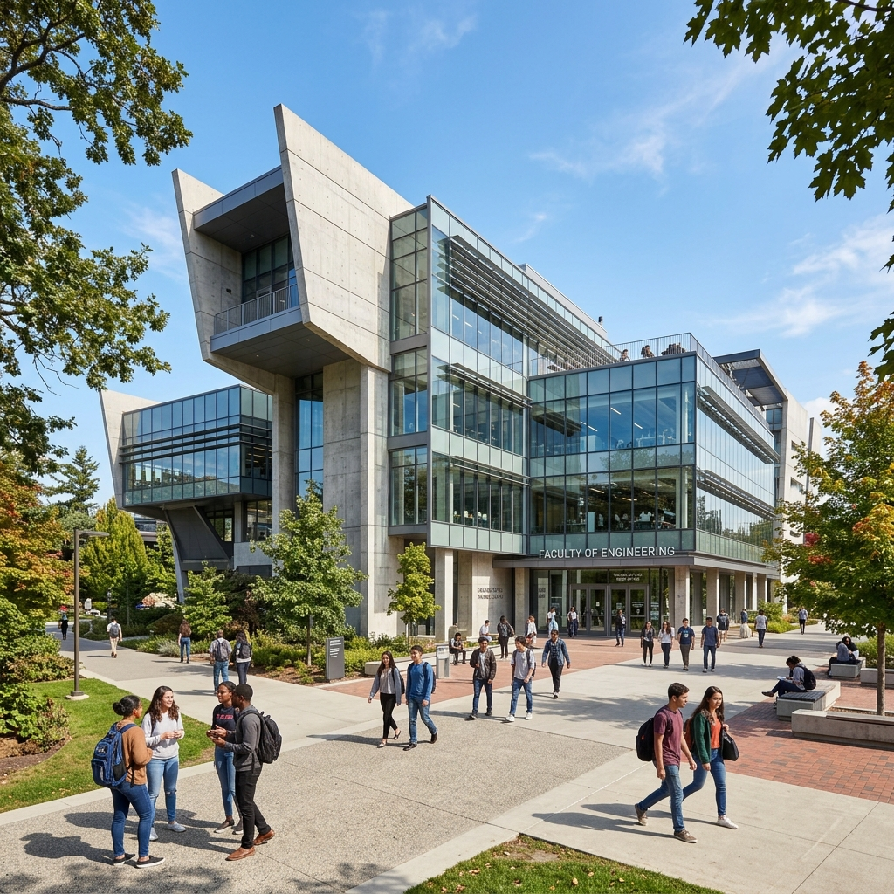

Hasil Pencarian
search

Informasi Kampus
Perpustakaan Pusat Terpadu
Fasilitas perpustakaan modern dengan koleksi jutaan buku cetak dan e-journal internasional. Dilengkapi dengan ruang diskusi kedap suara, area baca nyaman, dan akses internet berkecepatan tinggi.
Baca selengkapnya arrow_forward
science
Riset & Akademik
Laboratorium Terpadu & Pusat Riset
Daftar lengkap laboratorium teknik, sains, dan komputer yang tersedia di lingkungan Universitas Subang, dirancang untuk mendukung kegiatan tridharma perguruan tinggi.
Baca selengkapnya arrow_forward
sports_basketball
Kehidupan Kampus
Gelanggang Olahraga & Pusat Kegiatan Mahasiswa
Fasilitas olahraga standar nasional meliputi lapangan basket indoor, futsal, bulu tangkis, dan pusat kebugaran untuk mendukung kesehatan fisik mahasiswa.
Baca selengkapnya arrow_forward
restaurant
Kehidupan Kampus
Kantin Modern & Area Bersantai
Pusat kuliner higienis dengan berbagai pilihan makanan terjangkau. Area ini juga berfungsi sebagai tempat bersantai dan diskusi terbuka bagi mahasiswa.
Baca selengkapnya arrow_forward